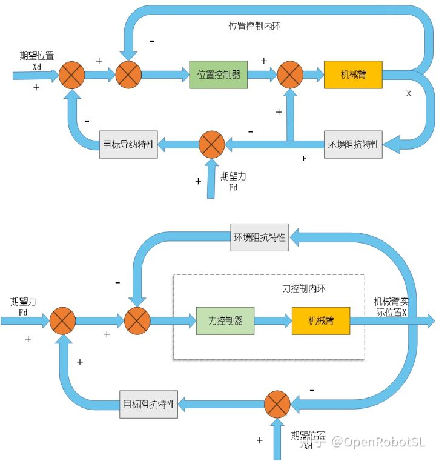

Home

其实原理我想大家都非常清楚了
导纳控制是基于末端六维力传感器获取外力/力矩，然后经过导纳控制器产生位移修正量，叠加到期望位置上。位置内环，力外环。
阻抗控制是基于动力学模型，在力矩环做补偿力控制。位置外环，力内环。
这里附上6DOF机械臂matlab仿真代码，这只是很简单的模拟外力代码，采用方案是离散化导纳模型+积分方式，给大家提供仿真思路，其实真正做起来还有不少需要优化的，我就不帮大家写了。详情请看韩冰老师的知乎
韩冰：基于六维力传感器机器人导纳控制简单复现基于积分方式，用的不是笛卡尔位移叠加，用的方式是导纳控制器产生速度，然后雅可比到关节空间速度，积分得到关节增量。与直接在笛卡尔叠加其实没有理论区别。也希望有人来交流这两种到底有没有本质区别呢。
一开始突然施加一个末端Z方向外力，然后突然撤掉，会发现机械臂像弹簧一样复原了哈
工具箱9.10版本。此代码适合学习，工程应用会有问题，韩老师也说了（其实还有很多问题哈，希望大家自己学习发现），大家学习思路就行了。

代码
https://github.com/OpenRobotSL/RobotForceControl
======================================================================
我的测试结果及程序
下面是我测试的代码：